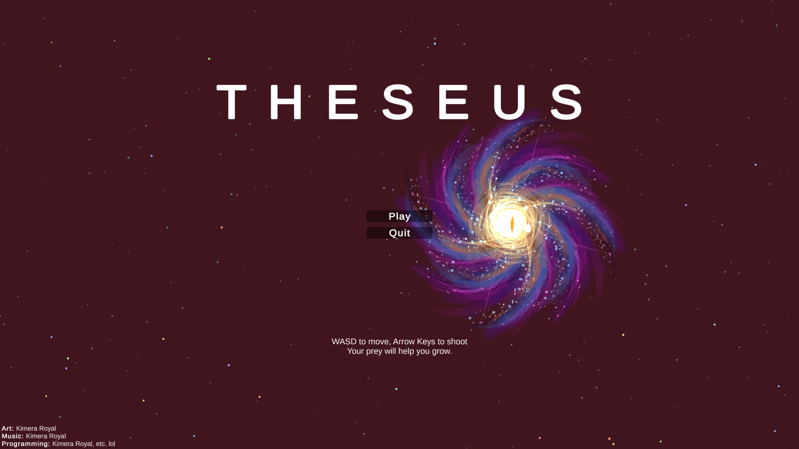
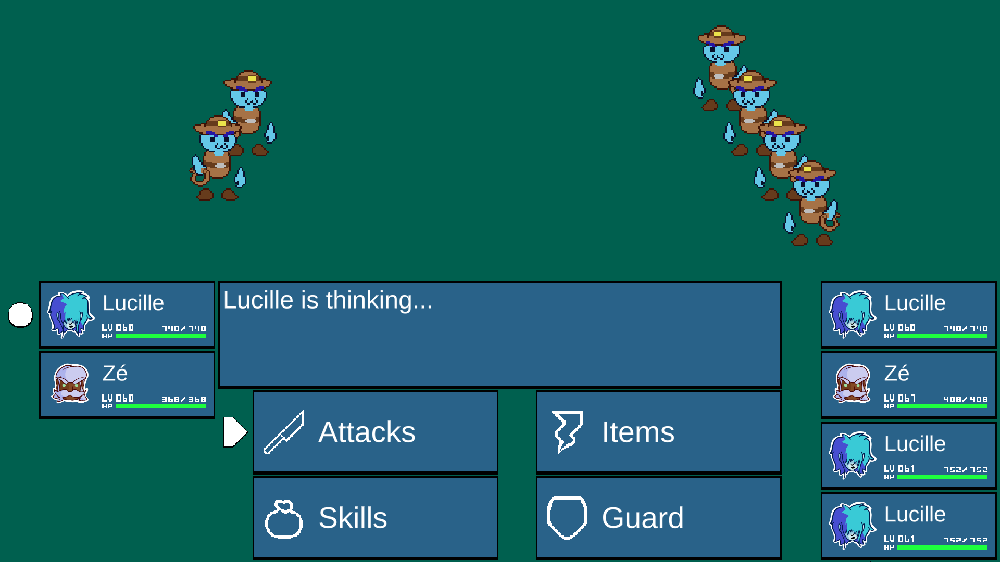
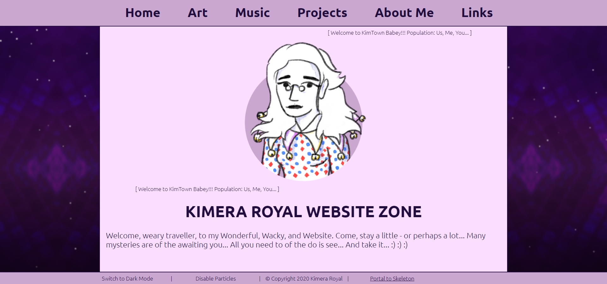
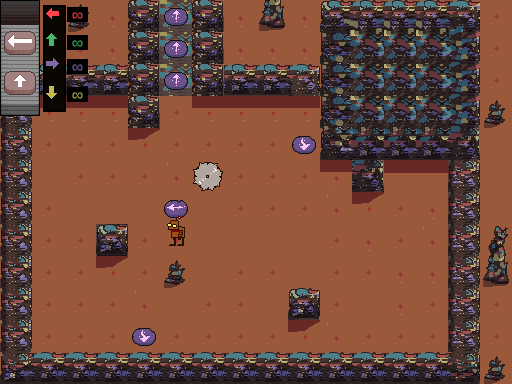
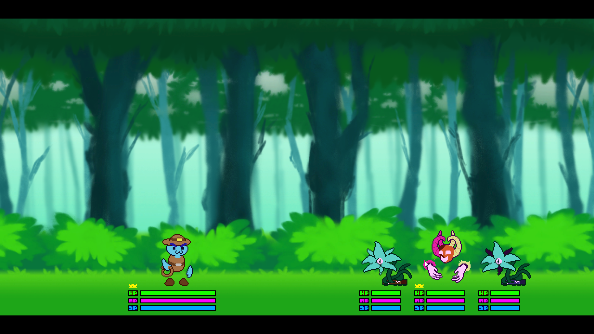

My Projects
Theseus

A game made for my university's January Game Jam with the theme of "Expansion". Theseus is a top-down 2D shooter where you can absorb the parts of enemies you defeat, growing larger and larger.
This game was a solo project - I designed and programmed it, as well as creating and implementing the art, music, and sound effects. In the end, the game won "Best use of Audio". It is playable for free on my Itch.io page, and the soundtrack is on my Bandcamp!
This game was a solo project - I designed and programmed it, as well as creating and implementing the art, music, and sound effects. In the end, the game won "Best use of Audio". It is playable for free on my Itch.io page, and the soundtrack is on my Bandcamp!
Dustworld

A turn-based RPG set a century after an apocalypse, made in Unity 3D. I have been working on design ideas for this game for 5 or so years, and I finally decided to commit to creating a demo for it.
Currently, I'm working on the combat system, which is almost figured, and once that is complete I will move on to creating an overworld for the game. With this framework complete, I will then be able to start working on creating an engaging experience!
Currently, I'm working on the combat system, which is almost figured, and once that is complete I will move on to creating an overworld for the game. With this framework complete, I will then be able to start working on creating an engaging experience!
Pacemecha DX

Building off of ideas that weren't feasible during the GMTK Game Jam 2020, I rebuilt Pacemecha from the ground up to be more stable and polished. Once I have released the demo for Dustworld, I will expand the Pacemecha DX prototype into a short, cohesive puzzle game of about an hour in length.
This expanded version includes smooth map transitions, a dialogue system, a node-based visual scripting solution for creating entity AI, and more! Focusing on creating a solid code-base that could support vertical expansion is a key focus of this project (especially after dealing with the rush of a game jam).
This expanded version includes smooth map transitions, a dialogue system, a node-based visual scripting solution for creating entity AI, and more! Focusing on creating a solid code-base that could support vertical expansion is a key focus of this project (especially after dealing with the rush of a game jam).
Portfolio Website

A personal portfolio website created entirely by me, using HTML, CSS, Javascript, Json, and a very small amount of Python. The site features a reactive, programatically animated particle background, multiple pages with interactable elements, a toggleable dark / light mode, and even mobile support!
As the first full website I've programmed, I found creating this site to be a real challenge, but it has helped me develop a lot of important skills. The first time for anything is always the most difficult - I know that next time I make a website, I will be able to take the skills I learnt on this portfolio and put them into practice.
As the first full website I've programmed, I found creating this site to be a real challenge, but it has helped me develop a lot of important skills. The first time for anything is always the most difficult - I know that next time I make a website, I will be able to take the skills I learnt on this portfolio and put them into practice.
Pacemecha

Pacemecha is a game developed over a weekend by me, doots, and LFOB, for the GMTK Game Jam 2020. The game is a grid-based puzzler where you remotely control a geriatric robot as he tries to escape from a junkyard. Unfortunately, the connection is poor, so all player inputs are slightly delayed: your first input will happen when you enter your second, your second will happen when you enter your third, and so on.
The game also features a limited amount of actions per-button in some levels - taking the jam's theme of "Out of Control" literally - which means that the player has to carefully plan out their actions in order to beat the game's levels. The jam was tense, stressful, and full of ups and downs, but the experience was invaluable and really helped us all focus on developing our workflows and skills.
The game also features a limited amount of actions per-button in some levels - taking the jam's theme of "Out of Control" literally - which means that the player has to carefully plan out their actions in order to beat the game's levels. The jam was tense, stressful, and full of ups and downs, but the experience was invaluable and really helped us all focus on developing our workflows and skills.
Keysword

Keysword is a typing / role-playing adventure game where the player has to utilise their keyboard in order to tackle all the challenges that face them in their quest for treasure and glory. I worked on some prototype gameplay / mockup graphics for the game in around June 2020, and I hope to expand on them further when time allows it.
Funny Bird Game 2

Funny Bird Game 2 is my first experiment into homebrewing - creating games / programs for consoles without official development tools. This game is made for the Gameboy Advance using the devkitPro toolchain / Tonc library and was programmed entirely by me in C++.
In addition to programming it, I also made all the assets - music, backgrounds, sprites, etc. It was a lot of fun to figure out how to tackle certain obstacles, like compressing my instrument samples to work at 8-bit 8kHz, or creating a scrolling parallax background with only one layer. Even the little challenges, like learning to use Makefiles, were rewarding and improved me as a designer, programmer, and so on.
In addition to programming it, I also made all the assets - music, backgrounds, sprites, etc. It was a lot of fun to figure out how to tackle certain obstacles, like compressing my instrument samples to work at 8-bit 8kHz, or creating a scrolling parallax background with only one layer. Even the little challenges, like learning to use Makefiles, were rewarding and improved me as a designer, programmer, and so on.